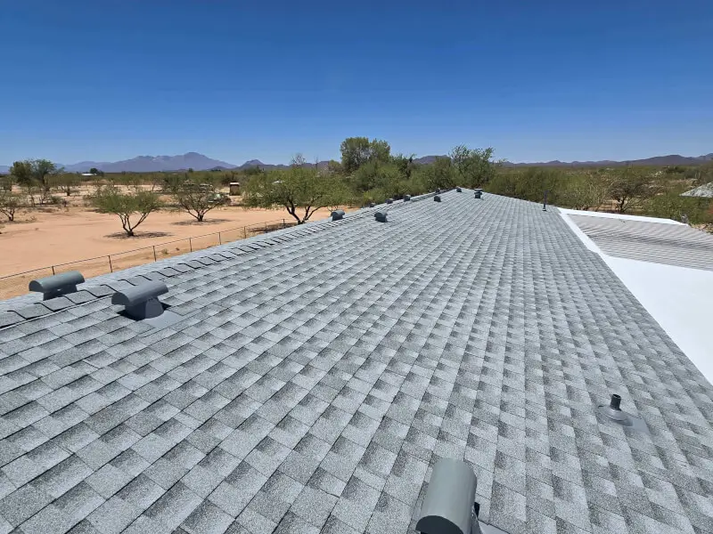

New Construction Roofing · Tucson, AZ
New Construction Roofing & Roof Installation in Tucson
Building a house, an addition, a casita or a shop? We put the first roof on it, done to code, inspected, and built for the desert. (Replacing a roof that's already there? That's our roof replacement page.) Clean job site, and you'll always know what's going on from start to finish.
- New homes, additions & casitas
- Works with your builder's schedule
- Financing available
- Licensed & Insured · ROC #358079
Installation Done Right
A roof's only as good as the crew that puts it on
You can buy the best material made and it'll still fail early if it goes on wrong. The stuff that actually matters, how the underlayment laps, the flashing, the venting, the nailing, that's exactly where cutting corners comes back as a leak a few years down the road.
We put every roof on with our own trained guys, the way the manufacturer says to, and we check the whole thing over when we're done. That's how you get the full life out of it.
- New-build & re-roof installation
- Manufacturer-certified methods
- Proper ventilation & flashing detail
- Financing on qualifying projects
New Construction
Builder-grade reliability and on-schedule installs for new homes and additions.
Complete Re-Roofs
Tear-off, deck inspection and a fresh system installed to current code.
Certified Crews
Our own trained installers — never anonymous day-labor subcontractors.
Every Detail
What a proper installation includes
A roof is a system, not just the part you can see. We install all of it right so the whole thing works together the way it's supposed to.
New Builds
Roofing for new construction around Tucson
New-construction roofing runs on somebody else's calendar: the framer has to be done, the city inspector has to sign off on the deck, and the stucco crew is usually waiting on us. We've done enough of these to show up when the builder needs us and get the roof dried in before the next trade is standing in the driveway.
We roof new homes, additions, casitas, garages and shops across Tucson and down to Rio Rico, in tile, shingle or metal, and we handle the paperwork the builder and the inspector want to see.
- Custom homes & production builds
- Additions, casitas & guest houses
- Shops, garages & outbuildings
- Dry-in on the builder's schedule
A new-construction tile roof we put on in Rio Rico Tearing off an existing roof instead? See roof replacement
Related Guides
Installation guides from our blog
Every roof type goes on a little differently. If you want to know what install day looks like for yours, start here.
Metal roof installation in Tucson: what to expect Flat roof installation in Tucson: materials and costs Installing a new shingle roof with solar attic vents Choosing roofing materials for Tucson's climate
How It Works
Our Roofing Process
Plan & Quote
We review the project, recommend the right system, and provide a written quote.
Material Staging
Materials delivered and staged to keep the job moving without site clutter.
Installation
Underlayment, flashing, field material and ventilation installed to spec.
Inspection & Cleanup
Quality check, magnetic nail sweep, full cleanup and warranty documents.
FAQ
Roofing Questions, Answered
Still wondering about something? Call us at 520-753-1758 — straight answers, no pressure.
Ask Us DirectlyDo you install roofs on new construction?
Yep. New houses, additions, casitas, shops, we do all of it, and we work around your builder's schedule and inspections.
Which roofing system should I install?
Depends on your slope, your budget, and what you care about on the energy side. Shingle's cheap and quick, tile lasts and looks great, metal's tough and efficient, and coatings are the move on flat sections. We'll point you to what fits best.
How long does a tile roof last in Arizona?
Good concrete or clay tile will go 50 years, sometimes more. It's the underlayment underneath that usually needs redoing around 20 to 25 years. The tile itself holds up great out here.
Do you offer financing for a new roof?
We do, on jobs that qualify, so you don't have to pay it all up front to get started.
Why choose a local Tucson roofer over a national company?
We know this climate, the local codes, and the exact ways desert roofs go bad. And you get a real local crew you can actually get on the phone, working out of Tucson rather than an office three states away.
What's the difference between roof installation and roof replacement?
Installation is the first roof on a new structure: a new house, an addition, a casita, a shop. Replacement is tearing an old roof off a building that already has one and putting a new system on. Same crew, same materials, but replacement includes the tear-off, disposal and deck repairs, so it's quoted differently. If your building already has a roof, you want our roof replacement page.
Planning a new roof?
Tell us what you're building and we'll tell you what roof makes sense, with a clear written price.
Let's Talk
Let's Take a Look at Your Roof
Tell me what's going on up there — a leak, storm damage, an old roof that's seen better days, or a full replacement — and we'll get you on the books for a free inspection.